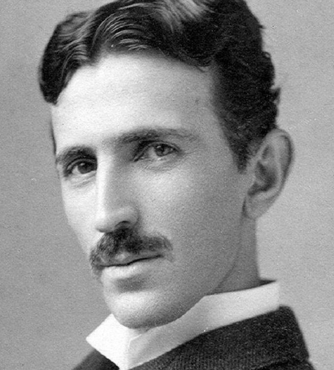

Nikola Tesla
(1856 - 1943)

"The one who invented the 20th century"
- Inventor, Engineer, Futurist...
- Serbian & American
SHORT STORY
TIME LINE
-
July 10th, 1856 His BirthTesla was born "at the stroke of midnight" with lightning striking during a summer storm. He was born to a Serbian family in Smiljan near Gospić, Lika, (the Military Frontier of Austria-Hungary, now in Croatia). The midwife commented, "He'll be a child of the storm," to which his mother replied, "No, of light."
-
September, 1875 Enrolled at Austrian PolytechnicIn 1875, Tesla began to study engineering at the Austrian Polytechnic in Graz, Austria. He claimed to have graduated, but the institution disagrees.
-
1882 Worked for Continental EdisonIn 1882, he went to work for Continental Edison in Paris. He was attempting to improve on electrical equipment sent from the United States.
-
1882 Identified Magnetic Induction Field PrincipleWorking independently, Tesla identified the rotating magnetic induction field principle. This is used today in alternators.
-
1884 Moved to the United StatesTesla moved to the United States in 1884, immediately approaching Thomas Edison with a letter of introduction. According to Tesla, he was offered 50,000 dollars to solve a problem, but Edison never paid.
-
1885 Nikola Tesla Quit Working for EdisonAfter Edison refused to pay, Tesla quit working for Edison, with the plan and intention of starting his own electrical company.
-
1886 Began Tesla Electric Light and ManufacturingTesla founded the Tesla Electric Light and Manufacturing Company in Rahway, New Jersey. He invented and marketed an arc lamp; however, he earned relatively little off of his investment.
-
1887 War of CurrentsThe War of Currents began in 1887. Direct current, invented and supported by Edison, was in direct competition with Tesla's alternating current.
-
1891 Patented Tesla CoilIn 1891, Tesla patented the Tesla Coil. The Tesla Coil is a resonant transformer circuit that produced a high voltage, low current and high frequency alternating current electricity.
-
1891 Columbian ExhibitionWith the support of the Westinghouse Company, Tesla's alternating current powered the World's Columbian Exhibition. Tesla had offered a lower cost electrical solution.
-
1901 Construction on Wardenclyffe Tower BeganIn 1901, construction began on the Wardenclyffe Tower. Tesla believed that he could transmit electrical energy over long distances wirelessly, and the tower would illustrate that. The project was never fully completed.
-
August 4th, 1915 Files Suit Against Guglielmo MarconiOn August 4, 1915, Tesla filed suit against Guglielmo Marconi. Marconi is typically credited with radio transmission; however, Tesla accomplished this before Marconi.
-
1934 Particle Beam ResearchIn 1934, the New York Times published Tesla's particle beam research. While he was not financially successful, he continued to be a relatively prominent voice in the scientific community.
-
January 7, 1943 He diedOn January 7, 1943, as World War II raged, Nikola Tesla died in the hotel he made his home. Upon his death, the U.S. government immediately seized his papers and research.
-
1960 A Tesla Was Defined as a Unit of MeasurementIn 1960, the scientific community recognized Tesla's achievements by defining a Tesla as a unit of measurement. A Tesla is a unit of magnetic field B.
SOME QUOTES FROM TESLA
- “If you want to find the secrets of the universe, think in terms of energy, frequency and vibration.”
- “If your hate could be turned into electricity, it would light up the whole world.”
- “Be alone, that is the secret of invention; be alone, that is when ideas are born.”
- “I don't care that they stole my idea . . I care that they don't have any of their own”
- “The scientists of today think deeply instead of clearly. One must be sane to think clearly, but one can think deeply and be quite insane.”
- “Of all things, I liked books best.”
- “The individual is ephemeral, races and nations come and pass away, but man remains.”
- “The day science begins to study non-physical phenomena, it will make more progress in one decade than in all the previous centuries of its existence.”
- “The present is theirs; the future, for which I really worked, is mine.”
- “My brain is only a receiver, in the Universe there is a core from which we obtain knowledge, strength and inspiration. I have not penetrated into the secrets of this core, but I know that it exists.”
- “I do not think you can name many great inventions that have been made by married men.”
- “I do not think there is any thrill that can go through the human heart like that felt by the inventor as he sees some creation of the brain unfolding to success . . . Such emotions make a man forget food, sleep, friends, love, everything.”
READ MORE
Wikipedia entry:
https://bit.ly/1LSrTUi
Simple time line:
https://bit.ly/2NhVGgc
Richer time line:
https://bit.ly/2Cm1SiY
Tesla's quotes:
https://bit.ly/2M3u7Tq